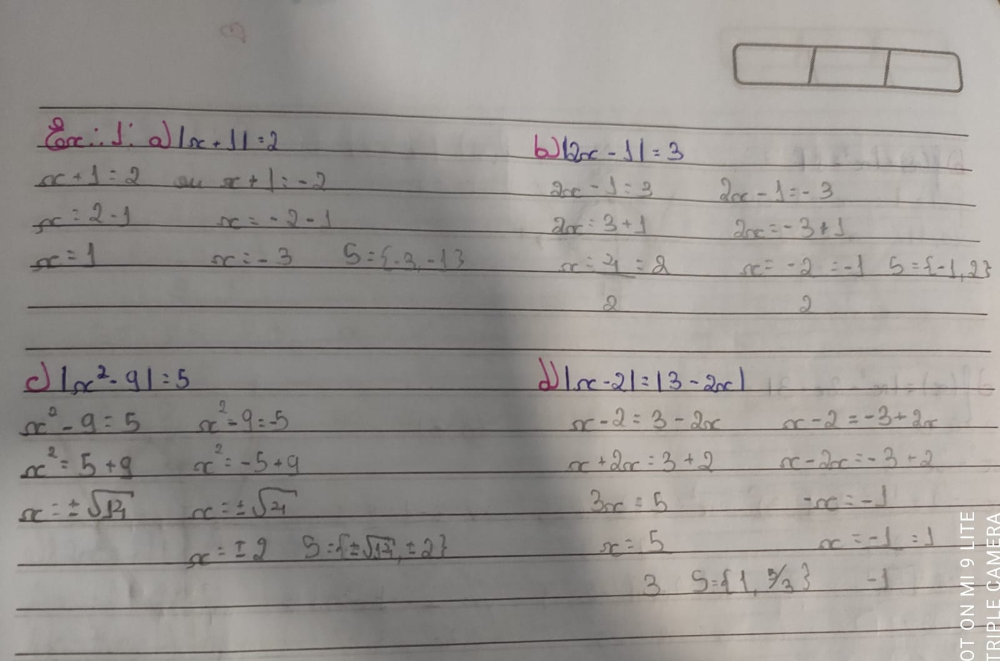
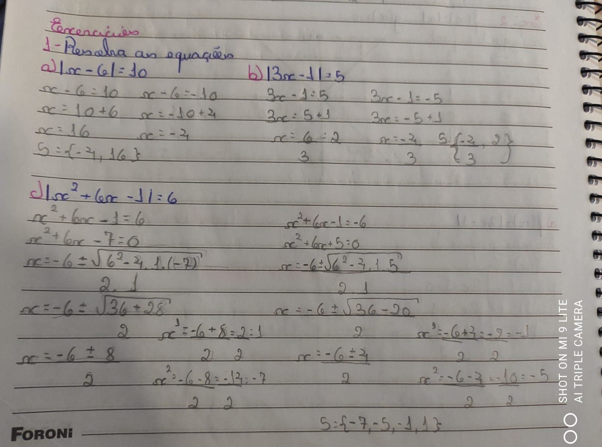
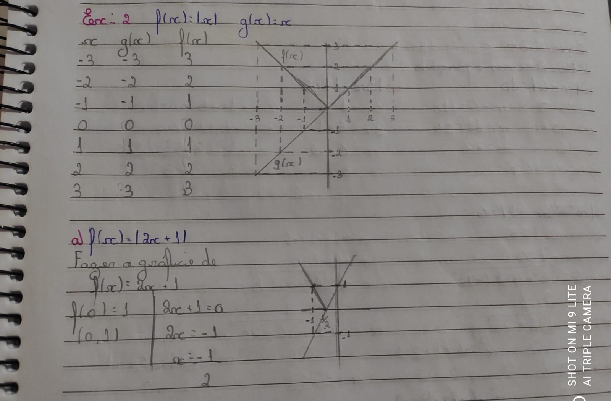
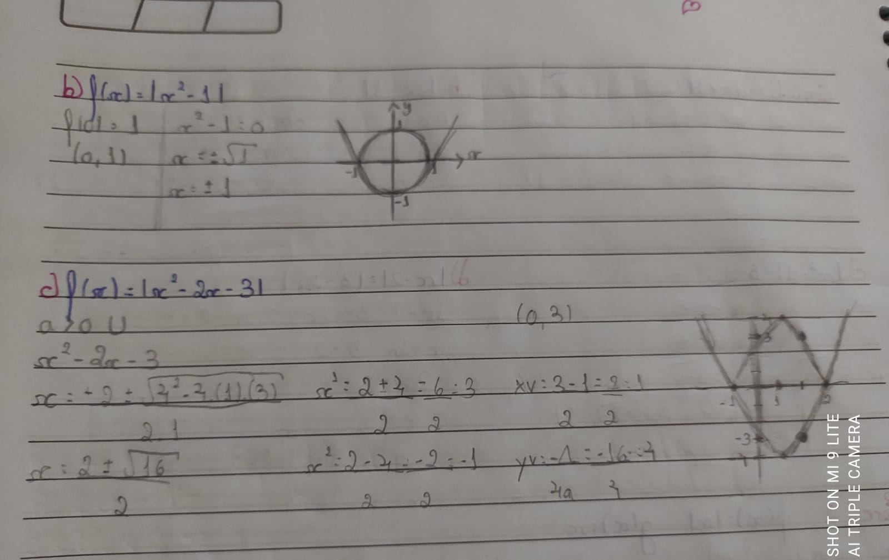

| Home | Introdução | Funções Exponenciais | Funções Modulares | Função Geral, Canônica e Fatorada | Logaritimos | Autoavaliação |
O módulo, também chamado de valor basoluto, é uma operação que tranforma o número em positivo. Por exemplo: |+3| = 3 e |-3| = 3. Quando temos uma variavel dentro do módulo, temos que considerar que ela pode ser tanto negativa quanto positiva: |x| = 3; x = 3 ou x = -3.
Chama-se função modular a função f, de R em R, de modo que f(x) = |x|, onde:
|  |  |
Para contruirmos um gráfico de função modular precisamos, primeiramente, fazer o gráfico que está dentro do módulo. Depois devemos refletir a parte com o Y negativo para que se torno Y positivo. Em seguida, precisamos verificar se existe algum número somando ou subtraindo fora do módulo, se houver é necessário mover o gráfico para cima ou para baixo. E, por fim, verificamos se a função modular passa o eixo x em outros valores, se isso acontecer, devemos igualar a função a zero e encontrar outros valores.
|  |  |
As funções modulares foram um pouco mais complicadas do que o conteúdo anterior. As equações em si não foram o problema, o que me complicou foi a parte dos gráfico, principlamente quando tínhamos que refletir uma das partes, isso causou um nó no meu cérebro, mas nada que não pudesse ser resolvido com a ajuda da professora Valéria e da minha mãe, no final, eu percebi que ele era mais fácil do que minha mente achava que era. No geral, acredito que fui bem durante esse conteúdo também.